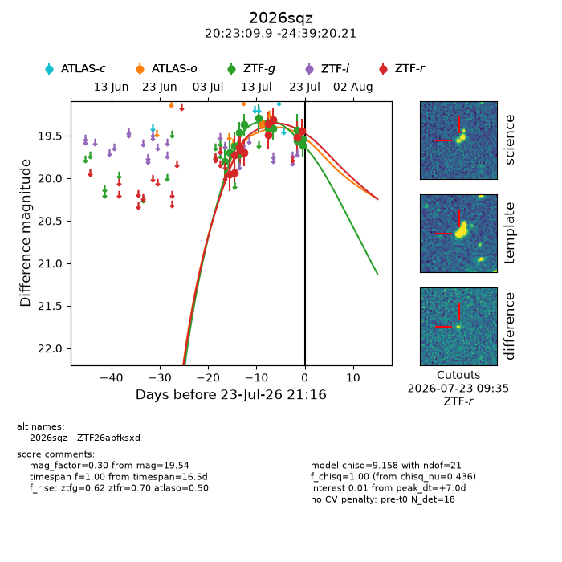
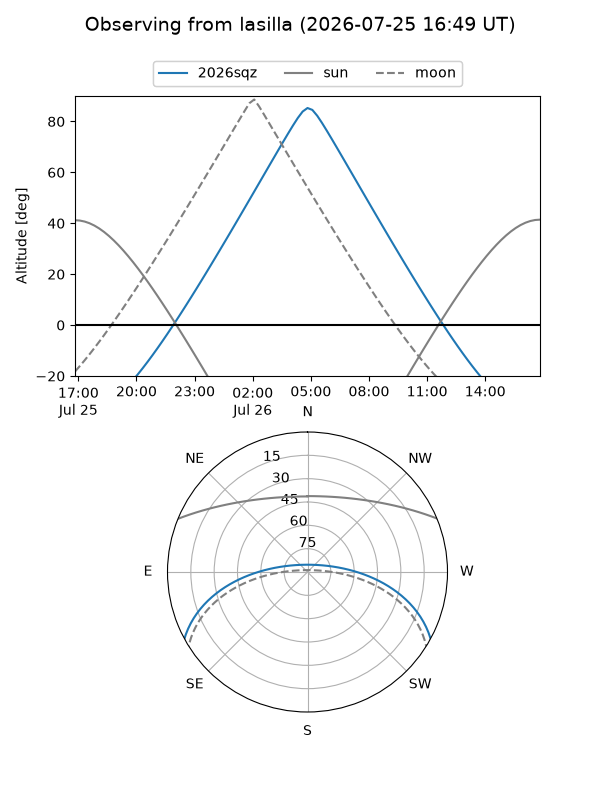
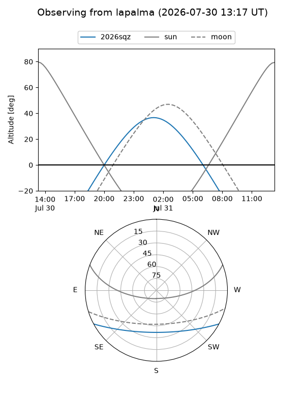
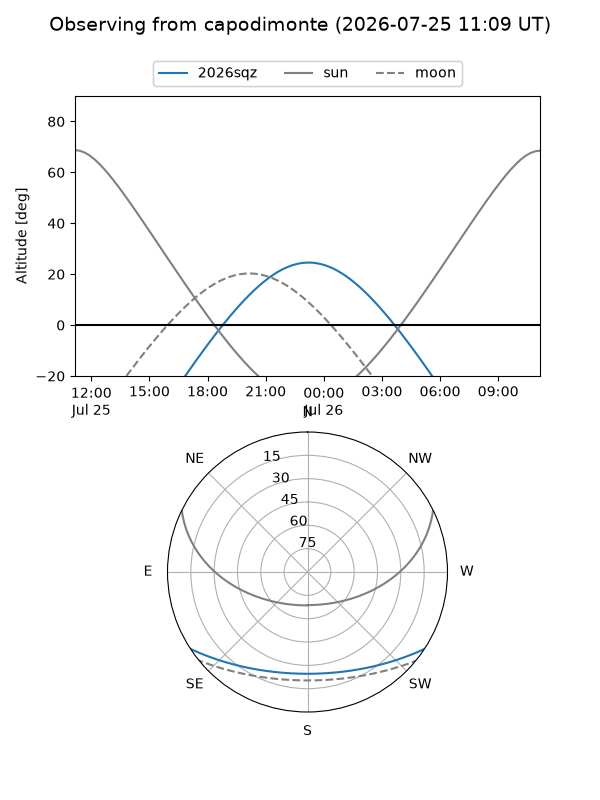
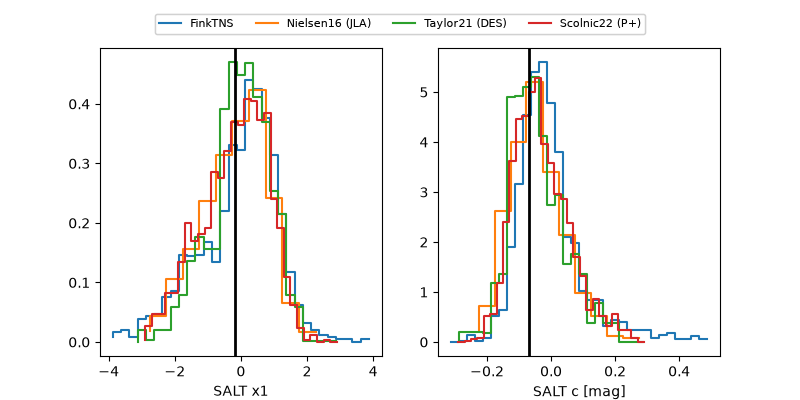

2026sqz
Target 2026sqz at 2026-07-23 21:19
Aliases and brokers:
FINK-ZTF: ztf.fink-portal.org/ZTF26abfksxd
Lasair-ZTF: lasair-ztf.lsst.ac.uk/objects/ZTF26abfksxd
ALeRCE-ZTF: alerce.online/object/ZTF26abfksxd
YSE-PZ: ziggy.ucolick.org/yse/transient_detail/2026sqz
TNS name: wis-tns.org/object/2026sqz
Direct TNS query: direct search
alt names
ZTF26abfksxd (ztf,fink_ztf)
2026sqz (tns,yse)
Coordinates:
equatorial (ra, dec) = 305.7913,-24.65561
equatorial (HMS+DMS) = 20:23:09.91,-24:39:20.21
galactic (l, b) = (18.8603,-30.35631)
Flags:
TNS type: nan
peak dt: +7.0
Photometry:
last atlaso=19.35, ztfg=19.54, ztfr=19.44
1 atlaso, 14 ztfg, 11 ztfr detections
Lightcurve

Visibility



Additional plots
